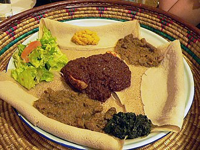
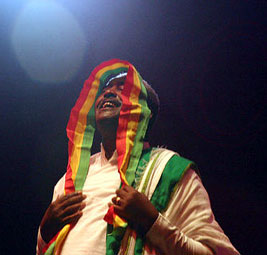

The best-known Ethiopian cuisine consists of various types of thick meat stews, known as wat in Ethiopian culture, and vegetable side dishes served atop injera, a large sourdough flatbread made of teff flour. This is not eaten with utensils, but instead one uses the injera to scoop up the entrées and side dishes. Almost universally in Ethiopia, it is common to eat from the same dish in the center of the table with a group of people. It is also a common custom to feed others in your group with your own hands—a tradition referred to as "gursha".[340] Traditional Ethiopian cuisine employs no pork or shellfish of any kind, as they are forbidden in the Ethiopian Orthodox Christian, Islamic and Jewish faiths. Chechebsa, marqa, chukko, michirra and dhanga are the most popular dishes from the Oromo. Kitfo, which originated among the Gurage, is one of the country's most popular delicacies. In addition, Doro wot (ደሮ ወጥ in Amharic) and Tsebehi derho (ጽብሒ ድርሆ in Tigrinya), are other popular dishes, originating from northwestern Ethiopia.[citation needed] Tihlo (ጥሕሎ)—which is a type of dumpling—is prepared from roasted barley flour and originated in the Tigray Region. Tihlo is now very popular in Amhara and spreading further south.[341]
back to top
The music of Ethiopia is extremely diverse, with each of the country's 80 ethnic groups being associated with unique sounds. Ethiopian music uses a distinct modal system that is pentatonic, with characteristically long intervals between some notes. As with many other aspects of Ethiopian culture and tradition, tastes in music and lyrics are strongly linked with those in neighboring Eritrea, Somalia, Djibouti, and Sudan.[347][348] Traditional singing in Ethiopia presents diverse styles of polyphony (heterophony, drone, imitation, and counterpoint). Traditionally, lyricism in Ethiopian song writing is strongly associated with views of patriotism or national pride, romance, friendship, and a most unique type of memoire known as 'Tizita'.
back to top
Ethiopian Broadcasting Corporation (EBC), formerly known as ETV, is the government-owned national channel. Other television stations in the country include Kana TV. The most widely circulated newspapers in Ethiopia are Addis Fortune, Capital Ethiopia, Ethiopian Reporter, Addis Zemen[citation needed] (Amharic) and Ethiopian Herald[citation needed]. The sole internet service provider is the national telecommunications firm Ethio telecom. A large portion of users in the country access the internet through mobile devices.[342] As of July 2016, there are around 4.29 million people who have internet access at their home as compared to a quarter of a million users a decade before that.[343] The Ethiopian government has at times intentionally shut down internet service in the country or restricted access to certain social media sites during periods of political unrest. In August 2016, following protest and demonstration in the Oromia Region, all access to the internet was shut down for a period of two days.[344] In June 2017, the government shut down access to the internet for mobile users during a period that coincided with the administration of Ethiopia's university entrance examination. Although the reason for the restriction was not confirmed by the government,[342] the move was similar to a measure taken during the same period in 2016, after a leak of test questions.[345][346]
back to top
The main sports in Ethiopia are track and field (particularly long distance running) and football. Ethiopian athletes have won many Olympic gold medals in track and field, most of them in long distance running.[349] Abebe Bikila became the first athlete from a sub Saharan country to win an Olympic Gold medal when he won the Marathon at the 1960 Rome Olympic Games in a world record time of 2:15:16.[350][351] Haile Gebrselassie is a world-renowned long distance runner with several world records under his belt. Kenenisa Bekele and Tirunesh Dibaba are also dominant runners, particularly in the 5,000 and 10,000 meters in which they hold the world records. Other notable Ethiopian athletes are Mamo Wolde, Miruts Yifter, Derartu Tulu, Meseret Defar, Almaz Ayana, Birhane Adere, Tiki Gelana, Genzebe Dibaba, Tariku Bekele, and Gelete Burka. As of 2012 and going into 2013, the current national Ethiopian national football team (nicknamed the Walayia Antelopes) made history by qualifying for the 2012 Africa Cup of Nations and reached the last 10 African football teams in the last stage of qualification for the 2014 FIFA World Cup. Noted players include captain Adane Girma and top scorer Saladin Said.
back to top